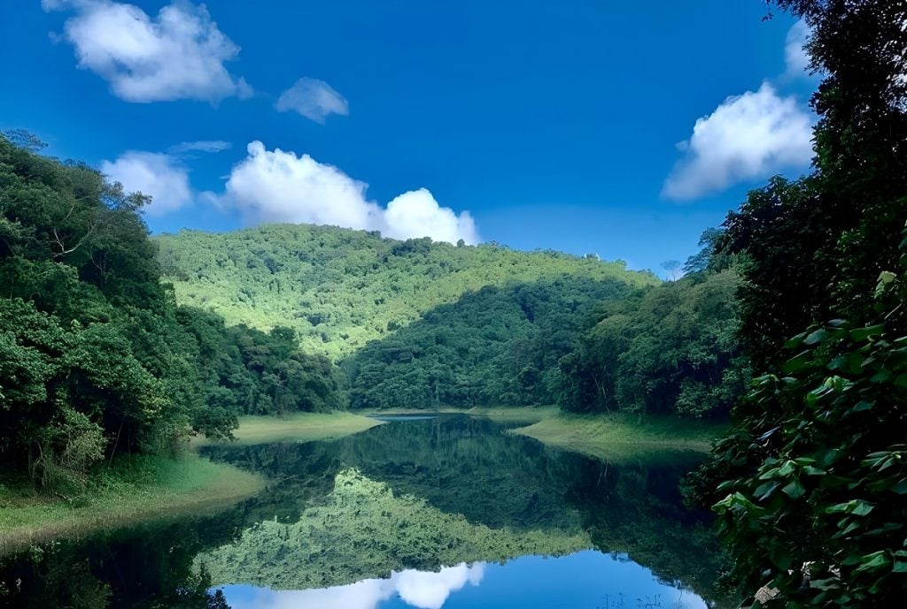
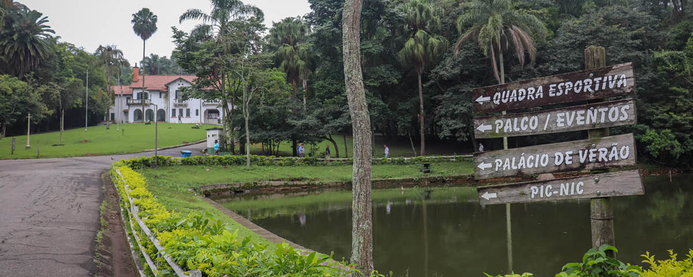
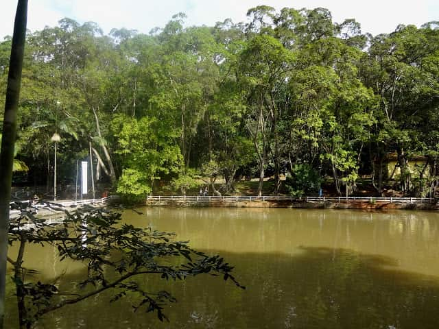

| Eventos | Notícias | Contato |
Inaugurado em 1962 e localizado ao lado do Horto Florestal, o Parque Estadual da Cantareira possui uma das maiores áreas de mata tropical nativa do mundo - situada em uma região metropolitana. Todo o complexo abriga os municípios de São Paulo, Guarulhos, Mairiporã e Caieiras.
|  |  |  |